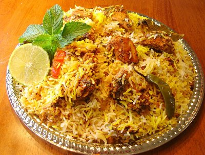
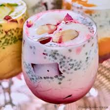
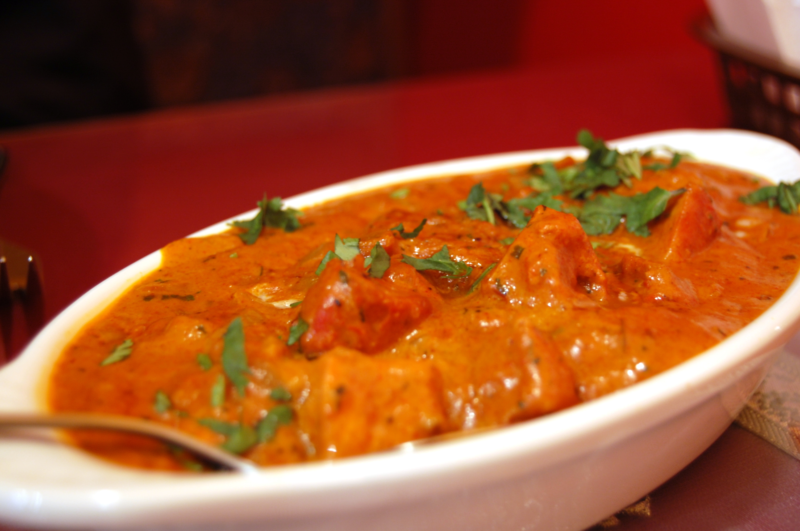

Biryani

A world-renowned Indian dish, biryani takes time and practice to make but is worth every bit of the effort. Long-grained rice (like basmati) flavored with exotic spices, such as saffron, is layered with lamb, chicken, fish, or vegetables, and a thick gravy.
Pasta

Pasta is the Italian designation or name given to a type of starchy noodle or dumpling food or dish typically made from grain flour, commonly wheat, mixed into a paste or dough, usually with water or eggs, and formed or cut into sheets or other shapes.
Palak Paneer

Palak Paneer is one of the most popular paneer dishes.
Paneer (Indian cottage cheese) is cooked with spinach and spices in this creamy and flavorful curry.
It pairs well with naan, paratha or jeera rice.
Gulab Jamun

Gulab Jamun is one of India's most popular sweet. These deep-fried dumplings/donuts made of dried milk [khoya] are dipped in a rose-cardamom flavored sugar syrup and make quite a treat. In India, you would find gulab jamun at every wedding, party, birthday and festivals.
Fried Rice

Fried rice is a dish of cooked rice that has been stir-fried in a wok or a frying pan and is usually mixed with other ingredients such as eggs, vegetables, seafood, or meat.
Egg Curry

Egg curry is a popular side dish made with boiled eggs cooked in onion tomato gravy.
Falooda

The falooda is a dessert disguised as a drink. It is a felicitous coupling of silky vermicelli noodles with ice cream and /or crushed ice, slithery black basil seeds (tukmaria), all of which is steeped in a colourful bath of rose and khus syrup, with nuts sprinkled over.
Butter Chicken

Butter chicken is prepared with marinated chicken that's first grilled and then served in a rich gravy (a.k.a. curry) made with tomato, butter, and a special spice blend as a base.
 Chef's Book
Chef's Book